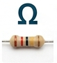

ELECTRONICS STARTER HUB
ELECTRONICS STARTER HUB
ELECTRONICS STARTER HUB
ELECTRONICS STARTER HUB

Carbon film and metal film resistors use color bands to indicate their resistance value. Precision circuits require 5 bands, while standard breadboard circuits typically use 4 bands.
| Color | Digit Value | Multiplier |
|---|---|---|
| Black | 0 | × 1 |
| Brown | 1 | × 10 |
| Red | 2 | × 100 |
| Orange | 3 | × 1k |
| Yellow | 4 | × 10k |
| Green | 5 | × 100k |
| Blue | 6 | × 1M |
| Violet | 7 | × 10M |
| Gray | 8 | - |
| White | 9 | - |